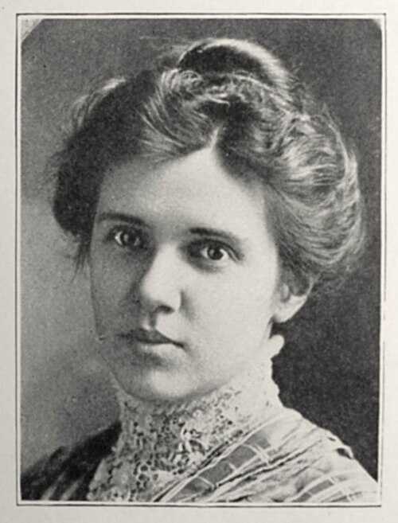
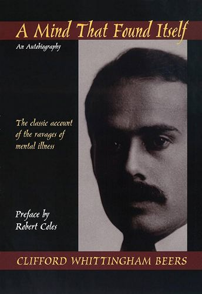
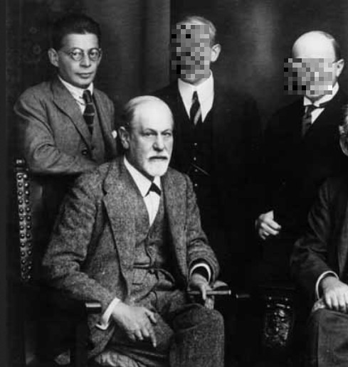
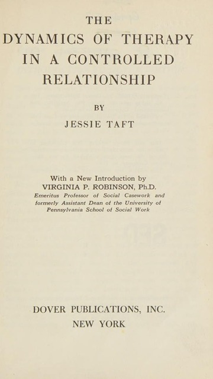
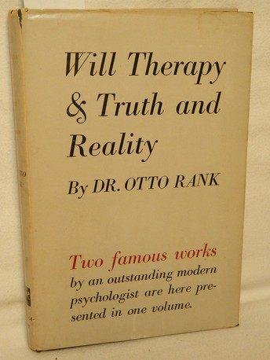
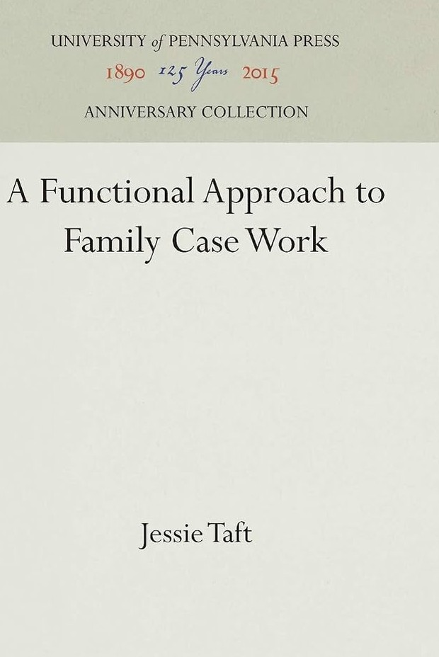
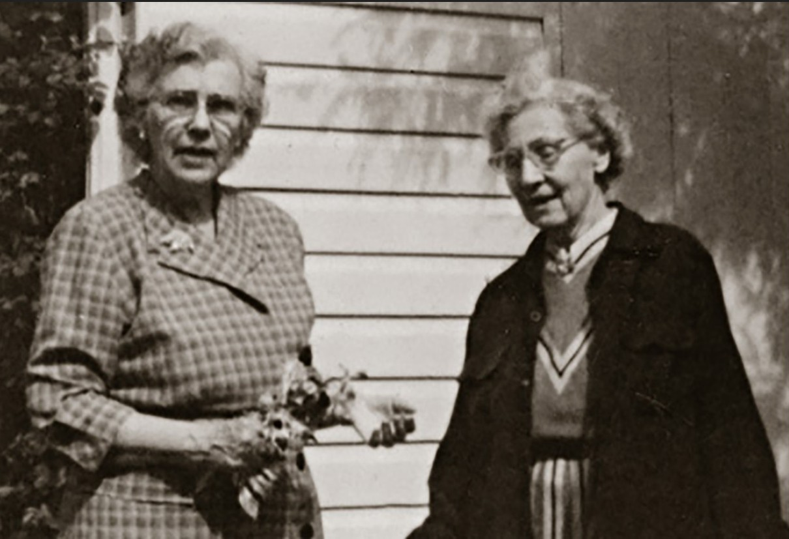
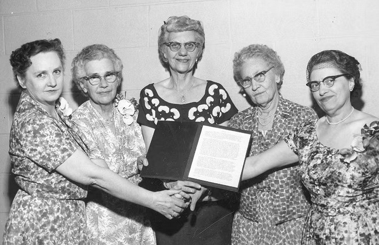
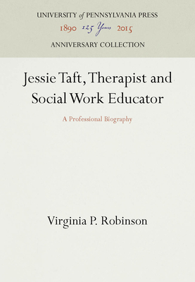

Джулія Джессі Тафт (Julia Jessie Taft, 1882–1960; вікіпедія) не здобула гучного культу й не будувала імперію послідовників. Її непомітними робочими місцями були жіноча в'язниця, дитячий притулок, соціальна служба та кімната, де семирічна дитина перевіряла дорослого на міцність. Саме там у 1910–1930-х роках вона поставила питання, яке за 20 років підхопить увесь гуманістичний рух: а що, якщо людина — не об'єкт ремонту, а автор власних змін?
На початку XX століття соціальна допомога часто починалася з ярлика. Фахівець визначав діагноз - ким є клієнт пацієнт, і що з ним «слід зробити». Тафт поступово перевернула цю схему: у її роботі людина могла наблизитися, чинити опір, узяти лише частину запропонованого або піти. Допомога переставала бути процедурою над людиною і ставала подією, у якій вона сама бере участь.
«Я» — дуже складне, невловиме й мінливе явище. До нього слід наближатися зі смиренням, відкритим розумом і бажанням не стільки судити, скільки зрозуміти. “The self is a very complex, elusive, changing phenomenon and we should approach it with an humble spirit, an open mind and a desire not so much to judge as to understand.” Jessie Taft, “Relation of Personality Study to Child Placing”, 1919
Коли Тафт написала ці слова 1919 року, дитину в державній опіці легко було звести до картки: тест, позначка про «нормальність», «пристойна побожна сім'я» — і справу вважали завершеною. Тафт затримала погляд на самій дитині: що вона любить, чого боїться, як захищається, як пережила втрату дому і що станеться з нею серед чужих людей? Із цього простого повороту уваги почалася її професійна революція.
З цього виросла функціональна школа соціальної роботи. Її цікавила напруга живої зустрічі: людина хоче підтримки й водночас захищається від неї; працівник співчуває, але представляє установу з правилами; час дає безпеку саме тому, що має початок і кінець. У традиції Тафт поруч із ними залишаються воля, спротив, межі та право людини бути автором власного життя.
Джессі Тафт народилася 24 червня 1882 року в місті Дюб’юк (штат Айова), а згодом її родина переїхала до Де-Мойна. Уявіть Айову наприкінці XIX століття: задушливі літні вечори, будинок успішного торговця фруктами, три доньки й дедалі менше розмов. Джессі — старша дитина Чарльза Честера та Аманди Мей Тафт. Америка навколо шалено багатіє на залізницях і промисловості. Жінка ще не має виборчого права, а тогочасні «медичні авторитети» й суспільство всерйоз переконують, що освіта та розумове навантаження шкодять її репродуктивному здоров'ю.
Батько будує оптовий фруктовий бізнес і дає родині матеріальний комфорт. Але комфорт не рятує від іншої тиші. Мати Джессі поступово втрачає слух. Разом із ним дім втрачає життя: гості приходять рідше, звичайна розмова вимагає зусиль, а емоційний контакт стає майже неможливим. Турбота йшла через їжу й порядок — але не через розмови, у яких дівчинка могла б почути себе.
Джессі заповнює цю порожнечу книжками й фортепіано. За клавішами вона може дати форму почуттям, для яких удома бракує голосу. Завдяки книжкам у школі вона часто перша, але соромиться надмірної ваги й незграбності, переживає насмішки та булінг. Пізніше, уже як терапевтка, вона анонімно розбере власне дитинство як клінічний випадок — настільки глибоко ця рання рана в'їлася в її розуміння себе.
Як самотня підлітка вона шукає й духовний дім. Користуючись «благочестивим» правом ходити до церкви, сідає на трамвай і їздить різними кінцями міста: баптисти, методисти, пресвітеріани. Зупиняється на унітаріанстві — подобається, що там віра може співіснувати з розумом, соціальною реформою та жіночою самостійністю. Це її перший тихий бунт: не скандал, а вибір іншого внутрішнього світу.
У 18 років (1900 року) Джессі вступає до університету Drake University, 1904-го закінчує його, а наступний рік проводить у Чиказькому університеті й здобуває ступінь з філософії (bachelor of philosophy). Почуття обов'язку повертає її до Де-Мойна. Вона викладає латину, математику й німецьку у West Des Moines High School — у тій самій школі, де колись була найкращою ученицею. Молода дівчина з двома університетськими освітами знову у знайомій будівлі, але в іншій ролі.

Чотири роки шкільної рутини дають їй перше відкриття: проблеми підлітків лежать не в програмі навчання — бунт, сором і страх перед майбутнім живуть значно глибше. Улітку 1908 року, коли їй виповнилося 26 років, Джессі вирішує повернутися до Чикаго для здобуття докторського ступеня.
Викладачі та філософи Джордж Герберт Мід, Джеймс Тафтс, Джон Дьюї — усі вони сперечаються про людину в дії: як «я» народжується між людьми, як чужий погляд стає частиною нашого образу себе, як середовище змінює особистість. Оселившись у будинку професора Джеймса Тафтса, вона знайомиться з іншою студенткою — Вірджинією Робінсон. У 1909 році університет дає їй стипендію з філософії та психології — для жінки-аспірантки того часу це майже неймовірно.
Робінсон запам'ятала першу зустріч: перед нею стояла велика, незграбна дівчина «із Заходу» — пряма, практична, з найдобрішими очима, які вона бачила. Поруч із Джессі люди несподівано починали говорити відверто, бо сама її присутність давала співрозмовникові місце.
У свої 30 років влітку 1912 року разом із Робінсон їде працювати у "New York State Reformatory for Women at Bedford Hills", це виправна установа для жінок віком 15–30 років, що діє з 1901 року та розташована приблизно за 50 км на північ від Мангеттена, Нью-Йорк.
1913-го вона захищає дисертацію The Woman Movement from the Point of View of Social Consciousness («Жіночий рух з погляду соціальної свідомості»). Дисертація стає раннім текстом феміністського прагматизму. Але університетської кафедри для її авторки не знаходиться. Друковане видання з'являється в середині 1910-х.
Дисертація аналізує жіночий рух як наслідок соціальної перебудови. Модерна економіка потребує освіченої й активної людини, тоді як домашній порядок вимагає від жінки покори. Тафт показує, як конфлікт між цими ролями ламає самосвідомість, освіту, працю й участь жінок у суспільстві — і як той самий устрій випалює емоційність і в чоловіків.
Після захисту Джессі повертається працювати у в'язницю помічницею суперінтенданта. Кабінетом служить колишня тюремна камера. Одного разу ув'язнена вибухає насильством. Тафт доводиться закувати її в кайданки й відвести до ізолятора. Вона ставить межу жорстко — а потім щодня приходить до цієї жінки. Не відвертається. Не вдає, що покарання скасувало людський зв'язок. Через багато років колишня ув'язнена напише Джессі: ви були доброю до мене в моїй некерованій дитячості, а головне — ніколи мені не брехали.
Приблизно через два роки Тафт переходить до "New York State Charities Aid Association" (Асоціація допомоги благодійним установам штату Нью-Йорк) і очолює "Department of Social Service". Вона виступає в установах і громадах із лекціями про нову тоді психічну гігієну, а раз на тиждень працює соціальною працівницею в "Cornell Clinic of Psychopathology", першій клініці психічної гігієни Нью-Йорка.

1908 року Кліффорд Бірс розповів Америці, що відбувається з людиною після психічного зриву: у книжці A Mind That Found Itself («Розум, що знайшов себе») він описав лікарняне насильство, пережите на власному тілі. Розповідь перетворила приватний жах на суспільне питання. Психіатр Адольф Меєр дав новому рухові назву mental hygiene, а вже 1909 року виник National Committee for Mental Hygiene.
Ідея звучала просто й сильно: як гігієна тіла запобігає епідеміям, так психічна гігієна має приходити раніше за катастрофу — у школах, сім'ях, громадах. Разом із гуманним імпульсом рух ніс небезпечну мову «нормальності», спадкової «дефективності» та євгеніки. Тафт починала всередині цієї системи: користувалася її тестами й категоріями, а потім дедалі уважніше дивилася на те, чого вони не бачили, — на конкретну людину та її стосунки зі світом.
Тафт починає допомагати людям поза клінікою — приходить додому до пацієнтів. Наприклад, гуляє з дівчиною, яка відмовляється говорити і яку тогочасні документи називають хворою на деменцію. Спершу між ними майже суцільна мовчанка. Згодом дівчина заговорює, пізніше виходить заміж і ще роками надсилає листи та різдвяні подарунки. Інша молода пацієнтка хоче померти. Джессі допомагає їй пройти крізь депресію — а потім зробити наступний крок: вступити до коледжу.
У Нью-Джерсі Тафт створює невелику експериментальну школу для дітей "Farm School". Проєкт обриває Перша світова: психіатра-консультанта призивають до війська, і школа закривається. Але Тафт встигає побачити, як швидко діти відгукуються на зміну середовища, — і вірить, що змінити їх легше, ніж дорослі звикли думати.
1918 року війна звільняє місце для нового повороту: "Pennsylvania School of Social Work" втрачає частину штату й запрошує Вірджинію Робінсон. 36-річна Тафт їде за нею до Філадельфії та очолює "Department of Child Study" (Департамент вивчення дитини) у благодійній організації "Seybert Institution" (повна назва — "Adam and Maria Sarah Seybert Institution for Poor Boys and Girls of Philadelphia").
Через цей тимчасовий притулок проходять діти, яких готують до життя в прийомних сім'ях. Тут у дорослих — анкети, тести й добрі наміри допомогти, а в дітей — пережитий розрив з батьками і майже жодної влади над наступним рішенням. На початку XX століття «підбір сім'ї» міг уміститися в одну впевнену фразу: порядна богобоязлива пара погодилася взяти дитину, отже, все складеться. Тафт бачить ризик, захований у цій простоті.
Джессі бажає спробувати інший підхід: спочатку дізнатися історію дитини, здоров'я, характер і страхи. Потім досліджувати майбутню сім'ю та залишатися поруч після розміщення, коли святковий день усиновлення вже минув, а справжнє спільне життя тільки почалося.
При притулку Тафт відкриває маленьку денну школу. Вона проіснує лише рік — діти змінюються надто швидко, — проте дає можливість дивитися на них поза тестовим бланком. Працівники спостерігають, як дитина входить у гру, зустрічає перешкоду, нападає, відступає, впирається або здається. Поведінка починає розповідати історію. За «неслухняністю» можна побачити спосіб вижити у світі, який уже раз виявився ненадійним.
Тафт усе ще користується мовою своєї епохи — тестами, категоріями «нормального» й «дефекту». Але в статті 1919 року вона робить крок за межі цієї мови. Перенести дитину з рідного середовища до чужої сім'ї вона називає «найделікатнішим з експериментальних завдань». Усиновлення може дати любов і належність, та починається воно з розриву; нова сім'я має зустрітися і з надією дитини, і з усім, що вона принесла із собою.
З 1919 року денна робота Тафт переходить у вечірні аудиторії "Pennsylvania School of Social Work". Вона навчає й супервізує працівників, консультує установи, пише для професійних і популярних видань. Усі ролі сходяться в одній точці: навіть найтепліша розмова відбувається всередині системи. За спиною спеціаліста стоять обіцянки установи, її правила, гроші, доступний час — і клієнт відчуває їх, навіть коли працівник воліє про них мовчати.
Джессі Тафт і Вірджинія Робінсон уже декілька років супутниці життя: ведуть спільне господарство, працюють поруч і будують майбутнє. Історики соціальної роботи та ЛГБТК-історії розглядають їхній союз у контексті жіночих одностатевих партнерств (у їхню епоху такі тривалі союзи професійних жінок також описували як «бостонський шлюб»), хоча у ті часи самі вони не вживали публічних ідентифікаційних ярликів, як то лесбійки.
Свій дім у Флаертауні неподалік Філадельфії вони називають The Pocket («Кишенька»). Поруч селяться професійні жінки, деякі теж живуть парами й виховують прийомних дітей. Вони купують будинки неподалік, проводять разом свята, підхоплюють дітей і допомагають одна одній у кризах. Тоді закон не визнає таких сімей — тож вони власноруч створюють те, чого він їм не дає: мережу спорідненості, безпеки й щоденної взаємодопомоги.
У 39 років (1921 року) через знайомих у нью-йоркській соціальній службі до них приходить восьмирічний хлопчик Еверетт. Він підтримує зв'язок із біологічним батьком і приносить вже сформовану історію. Приблизно за рік у домі ще з'являється п'ятирічна Марта, яка теж має живі родинні зв'язки. Дві фахівчині, що навчають інших розуміти дітей, тепер щодня зустрічаються з тією самою складністю за власним столом.
«Ми дуже відчуваємо себе сім'єю й іноді дивуємося, чи переживемо це». “We feel very much like a family, and some times wonder whether we are going to live through it.” Джессі Тафт у листі колезі, 1923
Фраза «чи переживемо це» — про те, що в їхньому сімейному житті вистачало виснаження й конфліктів. Професійна теорія та книжкові знання на роботі — це одне, а щоденне виховання підлітків удома — зовсім інше. У старших класах Еверетт утікає до біологічної бабусі в Канзас — різке нагадування, що наукові ступені батьків не рятують від сімейних криз.
Його донька пізніше згадуватиме: батько поважав Джессі й Вірджинію, але їхня наукова слава для нього нічого не важила — удома вони були просто батьками зі своїми вимогами, побутом і людськими помилками.
У кабінеті Тафт є дитячий столик, пластилін, фарби, кубики. Вона — один із піонерів дитячої ігрової терапії в США. Може сідати на підлогу навпроти семирічної дитини, яку відштовхнули кілька притулків, і годинами дивиться, як та ліпить, ламає, ховається або атакує.
До середини 1920-х років Джессі Тафт вже знає про дитячу психологію та соціальну роботу більше, ніж більшість американських фахівців її часу, але дедалі гостріше відчуває нестачу працюючої методології. Тести вимірюють інтелект, аналіз родинної історії пояснює минуле, а добра домівка змінює середовище. Але жоден із цих інструментів не дає відповіді на головне питання: чому одна дитина приймає підтримку, інша мовчить, третя чинить опір.

У цей період пошуків, у 1924 році (коли їй 42 роки), до рук потрапляють праці Отто Ранка. Колишній найближчий соратник Зигмунда Фройда саме відходить від ортодоксального психоаналізу, і його ідеї глибоко захоплюють Тафт. Ранка цікавить не нескінченна «археологія» дитинства, а драма, що розгортається просто зараз: воля людини, страх відокремлення, боротьба з терапевтом і момент, коли стосунок неминуче закінчиться. У цих працях Джессі знаходить теоретичне пояснення тих труднощів, з якими роками зіштовхувалася у своїй практиці.
Восени 1926 року вона сама сідає в крісло його клієнтки. Аналіз у Ранка в Нью-Йорку триває лише два тижні — це ніщо за мірками класичного психоаналізу, де років недостатньо. Але вистачає, щоб досвідчена терапевтка побачила власну роботу з іншого боку. Ранк дав їй не нові прийоми, а просте розуміння: терапія — це жива зустріч двох людей. Клієнт сам вирішує, наскільки відкриватися й що узяти з цієї підтримки. Людина змінюється не через сухі інструкції, а безпосередньо під час такого контакту.
«Мені знадобилося лише два тижні, щоб піддатися новому типу стосунків; у цьому досвіді природа моїх власних терапевтичних невдач раптом стала ясною». “It took only two weeks for me to yield to a new kind of relationship, in the experiencing of which the nature of my own therapeutic failures became suddenly clear.” Пізніший спогад Джессі Тафт про аналіз у Ранка
З цього моменту Джессі стає ключовою (і, на жаль, непомітною) постаттю у поширенні ідей Ранка в США. Протягом наступних років вона допомагатиме йому з лекціями (зокрема візити 1929 року), професійними контактами, працевлаштуванням та імміграцією до США. Згодом вона перекладе не лише його німецькі праці, а й сам спосіб мислення — адаптувавши його для соціальних працівників, які щодня зустрічаються з чужою волею в лікарнях, школах і службах.
Упродовж 1926–1932 років Тафт випробовує й осмислює новий підхід у власній терапевтичній практиці. Вона проводила щотижневі сеанси з дітьми в ігровій кімнаті, ретельно фіксуючи кожну деталь, коли ще не було ніяких пристроїв запису голосу (технікою швидкісного запису слів вона володіла досконало) та аналізуючи кожну зустріч: щохвилинний рух дитини, її спротив, наближення, малюнки, реакцію на межі часу та настільний годинник.
Паралельно вона викладає в Пенсильванській школі соціальної роботи, де поєднує філософію прагматизму з ідеями про людську волю. Підсумком цього шестирічного дослідження став її власний метод та фундаментальна книга, опублікована 1933 року, коли Тафт виповнився 51 рік.

Рецензія в American Journal of Sociology, 1934
Головна клінічна книга Тафт «Динаміка терапії в контрольованих стосунках» описує терапію двох семирічних дітей: Гелен і Джона. На матеріалі шістнадцяти годин роботи з Гелен і тридцяти однієї години з Джоном авторка показує спротив, прихильність, перенесення, встановлення меж і поступове відокремлення. Книга демонструє терапію як активний процес, у якому дитина використовує стосунок із фахівцем для розвитку власної волі.
Книга відкриває читачеві двері терапевтичної кімнати настільки широко, наскільки це дозволяють записи того часу. Соціолог Елсворт Феріс у рецензії 1934 року особливо відзначає повагу Тафт до дитини й сміливість винести складний клінічний матеріал на професійне обговорення. Водночас помічає слабке місце: читач добре бачить, як розгортається процес, але механізм самої зміни залишається менш ясним.
Ортодоксальне фрейдистське крило США звинувачує Тафт у поверхневості та потокані «єресі Ранка». Соціальні працівники в притулках, судах і лікарнях навпаки, були дуже раді: нарешті метод, який поважає клієнта й працює в реальних стиснутих термінах установ допомоги.
А для самої Тафт книга — відповідь тій академії, яка 1913 року не знайшла для неї місця. У 1934-му вона повертається професоркою. Наступного року "Pennsylvania School of Social Work" стала афілійованою з Університетом Пенсильванії, зберігаючи організаційну самостійність — і разом із Джессі до університету входить увесь досвід її двадцятирічної роботи: жіноча в'язниця, психіатрична клініка, тимчасовий притулок, прийомні сім'ї та власний дім із двома дітьми.
У 1936 році (у 54 роки) Тафт завершує інший великий проєкт — авторизований переклад фундаментальних праць Отто Ранка. Видавництво Alfred A. Knopf випускає Will Therapy та Truth and Reality. Ранк пише щільною німецькою філософською мовою — довгими реченнями, діалектичними петлями й багатошаровими термінами. Вона не просто перекладає слова — вона перекладає філософію.

Will Therapy («Терапія волі») розкриває терапевтичний процес через волю, спротив, актуальні стосунки та завершення контакту. Truth and Reality («Істина і реальність») викладає ширшу філософію волі Ранка: становлення особистості, творчість, відокремлення та відповідальність за власне життя. Переклад Тафт поєднав точність філософських понять із мовою практичної допомоги.
Навколо Тафт і Робінсон збираються Фредерік Аллен, Кеннет Прей, Рут Смоллі та інші практики. Так виникає функціональна школа соціальної роботи — не як одноосібний винахід, а як жива майстерня. Ідеї перевіряють у роботі з родинами, розбирають на супервізіях, сперечаються про них у класах і повертають назад у практику. Тафт не читає сухих лекцій «з трибуни»: вона розбирає зі студентами дослівні стенограми сеансів, змушуючи відчувати межі часу, етику допомоги й повагу до клієнта майже фізично.
Невдовзі ця майстерня опиняється в центрі великої професійної суперечки. Діагностична школа питає: що в історії та психіці людини спричинило проблему і як її лікувати? Функціональна школа починає з іншого: для чого людина прийшла саме до цієї служби, як використовує допомогу зараз і що відбувається між нею та працівником?
Діагностичний підхід більше уваги приділяє історії особистості, психосоціальній оцінці, внутрішній причині проблеми й плану лікування.
Функціональний підхід ставить у центр актуальне використання допомоги клієнтом, його волю, стосунок із працівником, конкретну функцію установи, початок і завершення контакту.
Суперечка швидко виходить за межі статей та розділяє всіх на два табори. Вона визначає навчальні програми, редакційну політику журналів і навіть те, кого візьмуть на роботу. Випускник Пенсильванської школи може прийти на співбесіду з добрими рекомендаціями — і отримати відмову лише тому, що його навчили бачити в клієнтові активного учасника, а не об'єкт діагностичного плану.
У червні 1936 року молодий Карл Роджерс шукає нові підходи, розчаровуючись у класичній директивній психології та особисто запрошує Отто Ранка до міста Рочестер (штат Нью-Йорк) на триденний семінар, щоб познайомитися з цим підходом безпосередньо. Сам Роджерс пізніше сказав біографу: «Я заразився ідеями Ранка».
Концепції функціональної школи впливають на Роджерса з кількох джерел одночасно: через колег-працівниць — випускниць Пенсильванської школи, через публікації Джессі Тафт та Фредеріка Аллена, а також через переклади праць Ранка. Роджерс відкрито визнає цей вплив — а далі йде власною дорогою. Він робить емпатичне розуміння серцем клієнт-центрованої терапії й будує навколо нього мову. Попри різницю в акцентах, обидва науковці стояли на спільних позиціях проти старої системи, де фахівець виступав виключно директивним експертом.
Свідчень про листування між Джессі Тафт і Карлом Роджерсом не виявлено. Надалі, коли він стрімко набирає популярність та перетворюєтся у всесвітній рух, вона дивиться на його роботу з фаховим інтересом. Щиро цінує те, що він зробив гуманістичні ідеї зрозумілими та доступними для широкої аудиторії. Водночас зауважує: якщо звести терапію лише до доброзичливого відображення почуттів, поза увагою може залишитися важлива робота зі спротивом, особистою волею та межами стосунку. Для Тафт людина у терапії не лише прагне прийняття, а й досліджує свої межі.
Восени 1939 року історія психоаналізу різко змінюється: 31 жовтня Отто Ранк у віці 55 років помирає в Нью-Йорку, куди з допомогою Тафт приїхав ховатися від війни. Він лікує інфекцію нирок, і організм несподівано дає тяжку реакцію на антибіотик сульфаніламід. Лише за п'ять тижнів до цього, 23 вересня, в Лондоні помер Зигмунд Фройд.
Зникли дві людини, чиї ідеї визначали центр психоаналізу. Ранк не був постаттю масштабу Фройда, а смерть настала доволі несподівано, тому його поховання на цвинтарі Ferncliff Cemetery у штаті Нью-Йорк не привернуло значної суспільної уваги та не залишилось фото.
Для 57-річної Тафт ухід Отто Ранка став як професійною, так і глибоко особистою втратою. Понад п'ятнадцять років їх пов'язувала дружба, інтелектуальна співпраця та велике листування, яке сьогодні зберігається в архівах. Після смерті Ранка Тафт написала кілька спогадів і некрологів, намагаючись зберегти пам'ять про його роботу та особистість.
Жорстка імміграційна політика США (через побоювання шпигунства) пропускає в країну без батьків десь 1400 дітей за 1938-1945 роки — ця рятувальна ініціатива пізніше стане відомою в історії під назвою «Тисяча дітей» (One Thousand Children). Після масових арештів євреїв у Парижі в липні 1942 року американські благодійні організації запропонували терміново ще вивезти дітей до США. Спочатку йшлося про 1000 дітей, але згодом президент Франклін Рузвельт погодився збільшити число до 5000. Трагедія в тому, що план майже одразу зірвався.
До філадельфійських організацій, зокрема "Children’s Aid Society of Pennsylvania", потрапляють європейські діти-біженці. Треба знайти ліжко, школу й законного опікуна — але за кожною практичною задачею стоїть дитина, яка втратила дім, розлучилася з батьками й має ввійти до чергової незнайомої родини. Установа вже визначає, де дитина житиме, хто стане її опікуном і якою мовою почнеться нове життя.
Тут функціональна школа зустрічає свою найважчу реальність. Працівник не може повернути дитині утрачений світ. Він може хоча б не відібрати останнє: право мати власну історію, сумувати, прив'язуватися, відштовхувати чужих дорослих і поступово вирішувати, кому знову довіряти.
Тафт просить студентів помітити третього учасника будь-якої професійної зустрічі. У кімнаті сидять клієнт і працівник, але разом із ними присутня лікарня, школа, суд або служба у справах дітей. Саме установа задає обмеження та вирішує, чи може дати нічліг, влаштувати дитину, оплатити лікування або запропонувати лише кілька консультацій.
Приховувати цю владу за теплою посмішкою — для Тафт форма нечесності. Людина має знати, чому відбулася зустріч, що їй справді доступно, які правила діють і коли допомога завершиться. Усередині ясно названої рамки з'являється вибір: скористатися службою, сперечатися з нею, прийняти частину допомоги або піти. Саме так клієнт відновлює контроль над власним життям і рішеннями там, де система звикла вирішувати за нього.

University of Pennsylvania Press
У збірнику «Функціональний підхід до сімейної соціальної роботи» під редакцією Тафт автори розглядають конкретні можливості соціальної служби, участь родини у виборі, межі професійної ролі та використання допомоги самими клієнтами. Книга стала практичним викладом методу для сімейної соціальної роботи.
На початку 1950-х її щоденний ритм повільно змінюється. Випускники Пенсильванської школи працюють у соціальних службах по всій країні, колеги перетворюють метод на навчальну традицію. Тафт залишає основну посаду але ще читає окремі курси й консультує, а близько 1952 року (у 70 років) остаточно відходить від регулярного викладання. Аудиторії залишаються позаду; попереду — коробки листів, чернетки й велика незавершена розповідь про Ранка.
Джессі Тафт могла написати біографію Отто Ранка так, як ніхто інший. Вона володіє німецькою й роками перекладала його тексти; особисто пройшла його метод у власному аналізі; перевірила ці ідеї на дітях, родинах і соціальних службах; бачила самого Ранка в дружбі, спільній роботі та професійних суперечках.

Вона сидить над записниками, листами, опублікованими працями й клінічними матеріалами, відновлюючи шлях від юного секретаря Фройда до автора самостійної психології волі. За кожним теоретичним поворотом стоїть людська ціна: близькість із психоаналітичним рухом, розрив із ним, еміграція й боротьба за нову аудиторію. Майже через двадцять років після смерті Ранка ця праця бачить світ.
Біографічне дослідження простежує розвиток Ранка від роботи поруч із Фройдом до самостійної теорії волі. Книга пояснює зв'язок між ідеями волі, творчості, відокремлення й короткострокової терапії.

Навесні 1960 року Тафт переносить інсульт - шість тижнів проводить у лікарні. Вірджинія Робінсон проживає поруч останнє завершення. 7 червня 1960 року Джессі Тафт помирає у віці 77 років. Вона встигає завершити розповідь про Ранка, але її власна історія залишається прихованою.

Біографія поєднує історію життя Тафт із фрагментами її праць, листів і клінічних матеріалів. Робінсон простежує її шлях від філософії та роботи з дітьми до психотерапії, викладання й формування функціональної школи соціальної роботи.
Через два роки Робінсон публікує книгу «Джессі Тафт: психотерапевтка та викладачка соціальної роботи». Мова початку 1960-х дозволяє називати їх «колегами» й говорити про «спільну працю», залишаючи пів століття любовної близькості між рядками.
Сьогодні ім'я Джессі Тафт звучить значно тихіше за імена чоловіків, що стоять поруч у цій історії. Соціальну роботу довго вважали «жіночою допоміжною професією», місцем турботи, а не великих теорій. Її власне життя постійно виправляло надто прості теорії. Добра сім'я не гарантувала легкого усиновлення. Діагноз не підказував, як не покинути мовчазну дівчину. Любов не скасовувала конфлікту. Свобода без рамки могла розчинитися, а рамка без людяності — перетворитися на покарання. Вона посунула фахівця з центру й повернула клієнтові статус учасника власного життя.
Рут Смоллі збере все надбання Тафт для наступного покоління в книзі "Theory for Social Work Practice" («Теорія практики соціальної роботи», 1967). Метод Тафт найкраще видно не в словнику термінів, а в уявній кімнаті соціальної служби. Сюди приходить людина, яка потребує допомоги й водночас має всі підстави не довіряти установі. Навпроти сидить працівник, здатний співчувати, але обмежений правилами, часом і владою організації. Тафт побудувала практику навколо того, що відбувається між ними.
Чесні, передбачувані й не принизливі межі створюють простір для свободи. Людина може побачити рамку допомоги, пережити її, використати доступні можливості та зробити власний вибір.
Клієнт може запізнитися, мовчати, сперечатися, вимагати неможливого або раптом прийняти одну маленьку частину допомоги. Для Тафт усе це — дія, а не шум навколо «справжнього лікування». Так людина перевіряє стосунок і повертає собі вплив. Зміна починається в момент, коли фахівець перестає тягнути її до правильної відповіді й помічає, як вона сама використовує зустріч.
Дитина може лютувати через завершення години, а дорослий — вимагати від служби того, чого вона не здатна дати. Працівник витримує цей гнів і не відступає від реальності. Людина отримує рідкісний досвід: її сильні почуття не руйнують стосунок, а тверда межа не перетворюється на приниження.
Якщо від початку відомо, що зустрічей буде десять по 40 хвилин, то вони закінчатся кожного разу саме по годинику. Наближення останньої хвилини піднімає страх відокремлення, злість, бажання втекти першим або зробити вигляд, що стосунок нічого не означав. Тафт не ховає фінал: те, як людина входить у завершення, стає живою частиною терапії.
Соціальний працівник ніколи не приходить сам. Разом із ним у кімнату входить організація, яка має гроші, документи, ресурси, правила і право сказати «ні». Функціональний підхід називає цю владу вголос. Клієнт бачить, де саме лежить його вибір, а працівник не обіцяє порятунку, якого не може забезпечити.
Стара благодійність дивилася згори вниз: ось щедрий рятівник, а ось «нещасний», якому слід бути вдячним. Тафт ставить їх обличчям одне до одного. Розуміння вимагає ввійти в досвід іншого, витримати його незручну волю й не привласнити право розпоряджатися його життям.
Тафт була новаторкою й водночас працювала мовою та інструментами своєї епохи. Сучасна оцінка її підходу охоплює як сильні сторони, так і історичні обмеження.